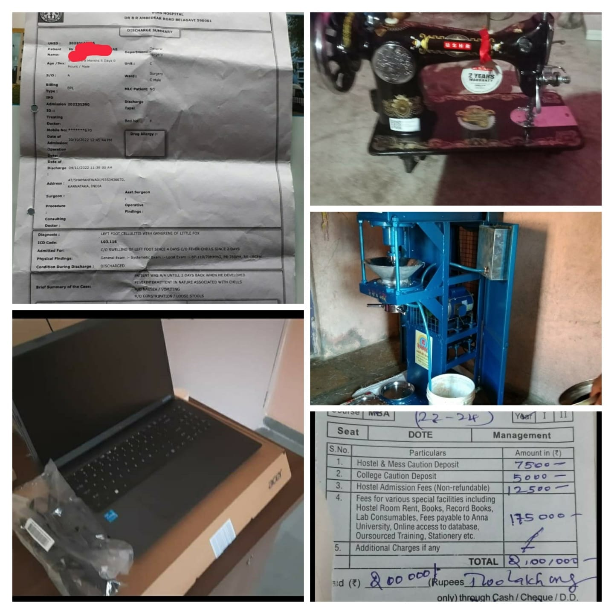
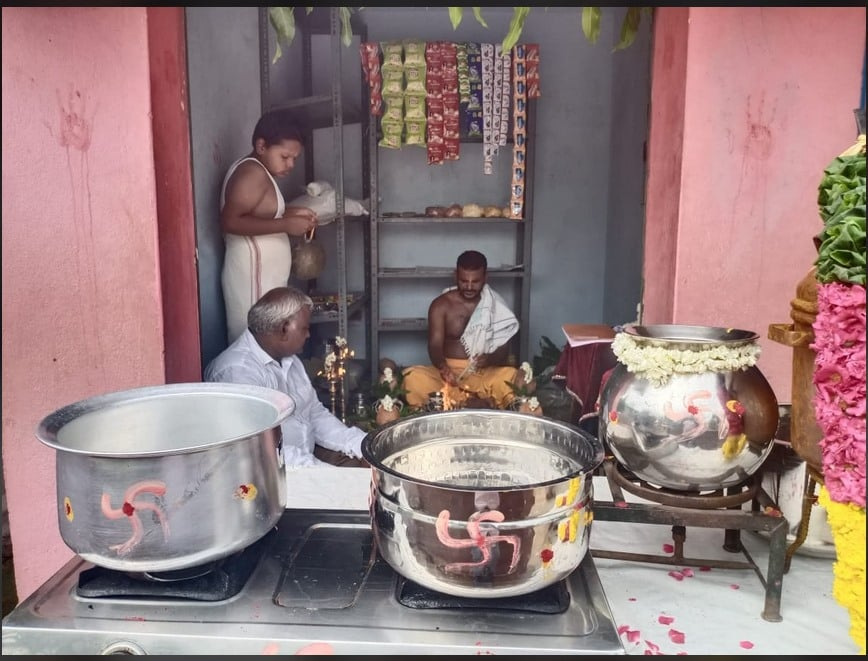
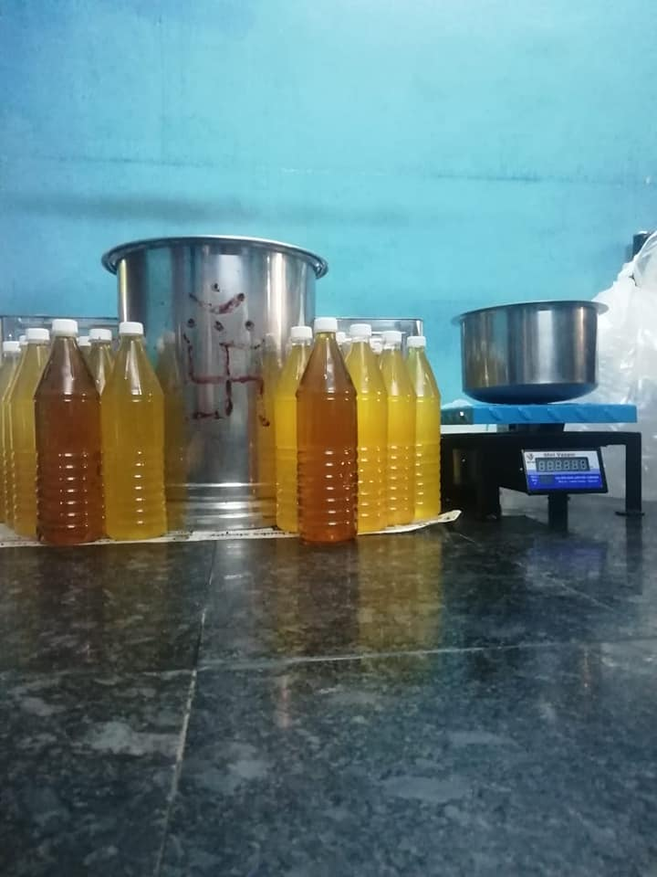
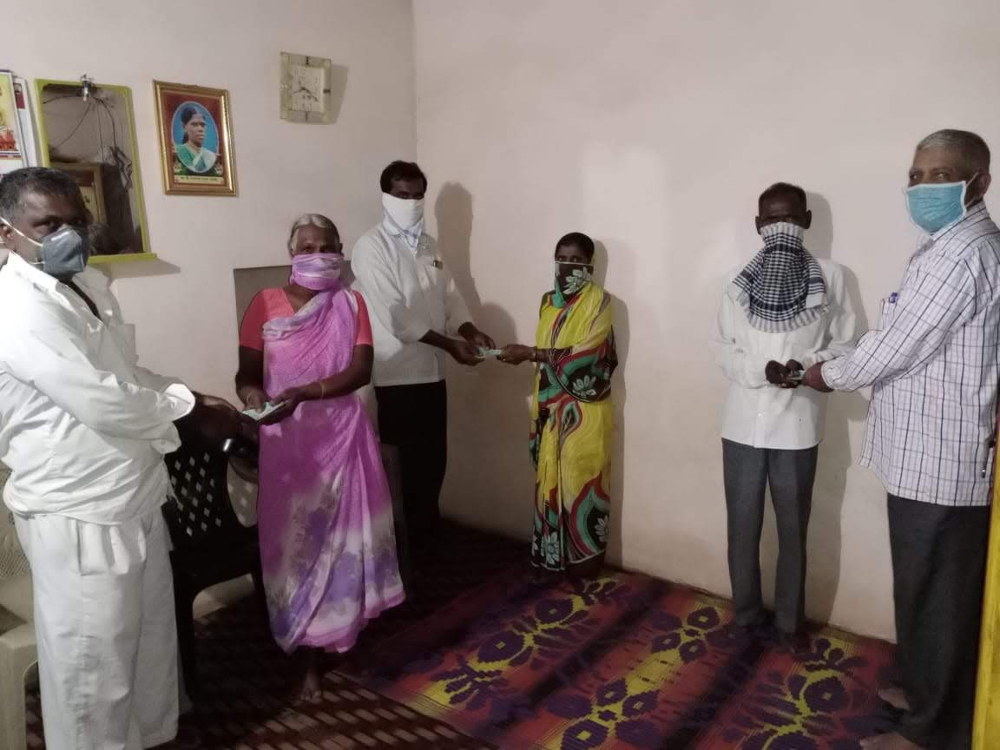
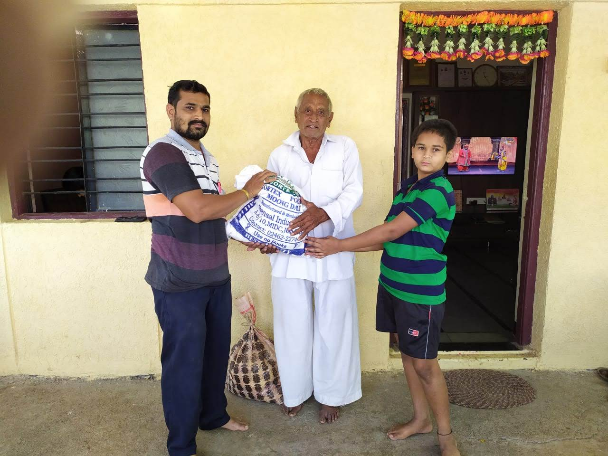
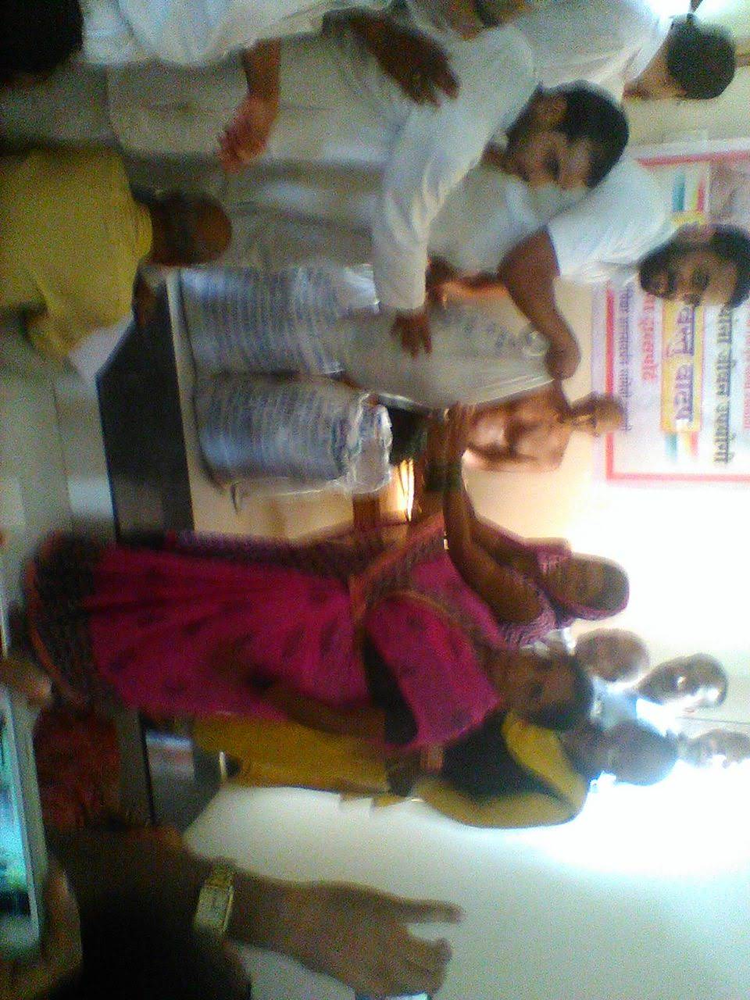
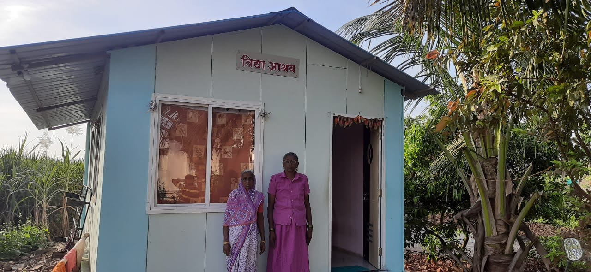
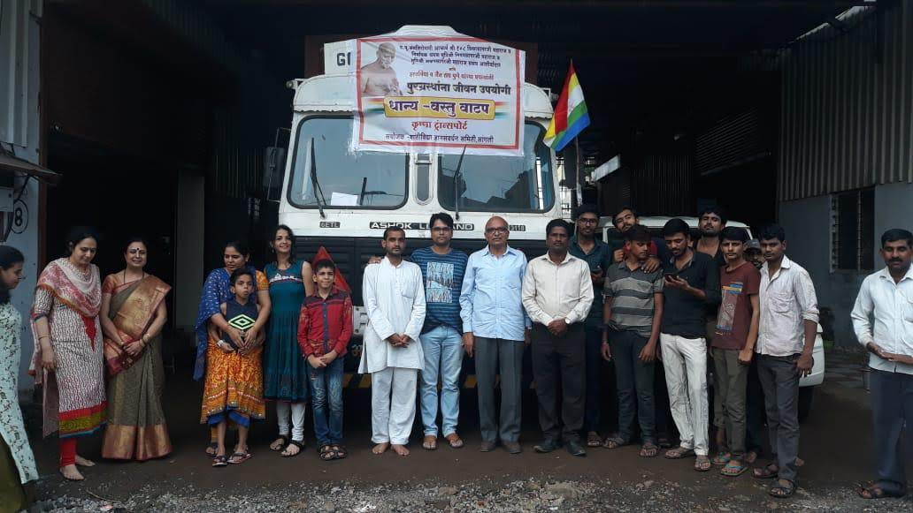
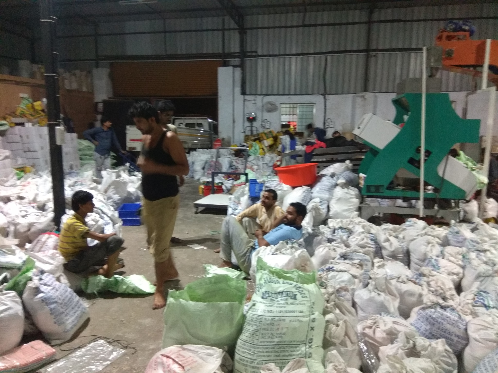
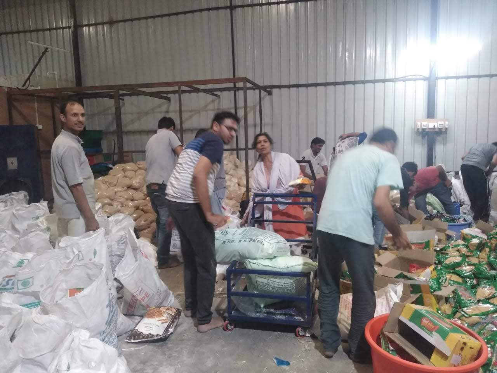

सामाजिक कार्य (Social Service)
Jain Sangh Pune द्वारा वर्ष 2012 से निरंतर सामाजिक सेवा एवं जनकल्याण के कार्य किए जा रहे हैं। संगठन का उद्देश्य समाज के आर्थिक रूप से कमजोर, जरूरतमंद एवं प्रतिभाशाली लोगों को सहयोग प्रदान कर उन्हें आत्मनिर्भर एवं सशक्त बनाना है।
मुख्य सेवा गतिविधियाँ और पहल



आपातकालीन राहत और आपदा प्रबंधन
कोविड-19 संकट राहत
लॉकडाउन के कठिन समय में Tamil Nadu, Karnataka एवं Maharashtra के अनेक गरीब एवं जरूरतमंद परिवारों को प्रतिमाह ₹1500–₹2000 तक की आर्थिक सहायता प्रदान की गई।
2021 महाराष्ट्र बाढ़ राहत
Maharashtra floods के दौरान Kolhapur एवं Sangli क्षेत्रों में प्रभावित परिवारों तक आवश्यक सामग्री पहुँचाई गई। इसके तहत लगभग 1000 राहत किटों का वितरण किया गया।
📸 कोविड-19 सहायता गतिविधियाँ


📸 जमीनी बाढ़ राहत अभियान

बाढ़ राहत वितरण एवं जमीनी दौरे




"इन सभी सेवा कार्यों के माध्यम से संगठन निरंतर मानवता, सहयोग एवं सामाजिक उत्थान के मूल्यों को आगे बढ़ाने हेतु समर्पित है।"